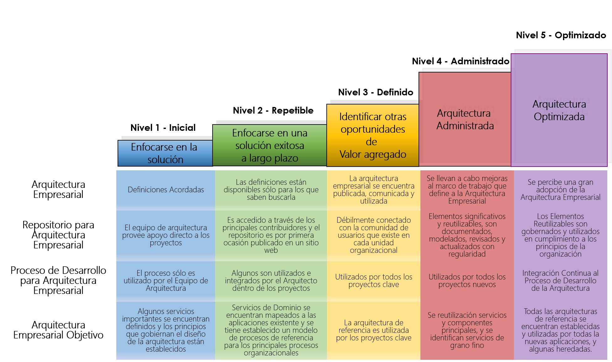
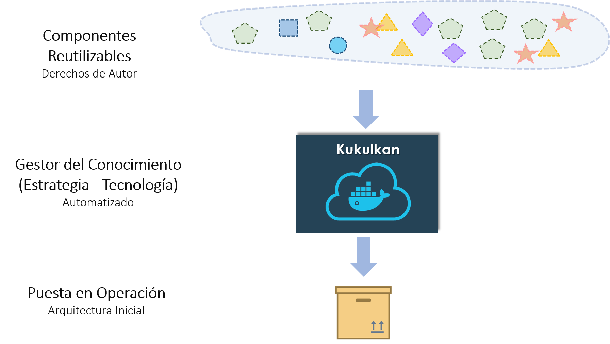
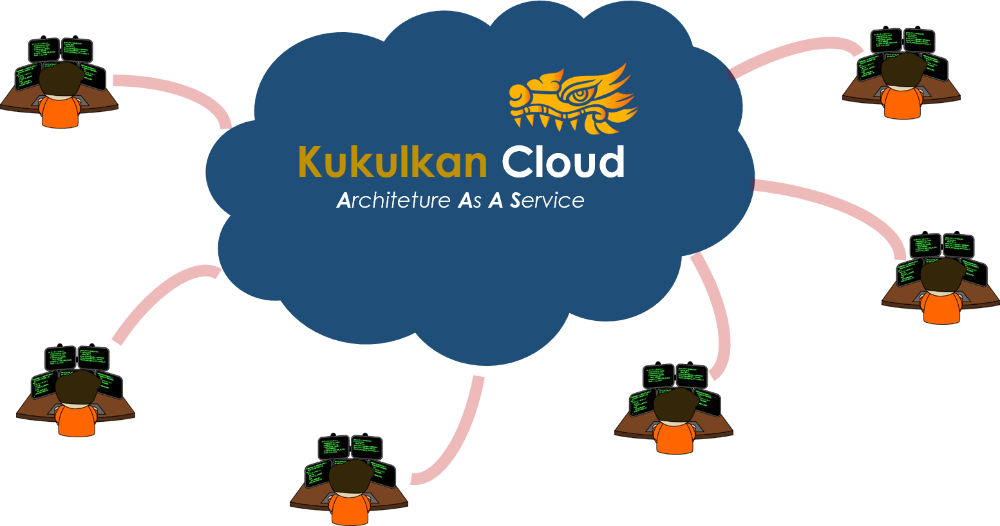
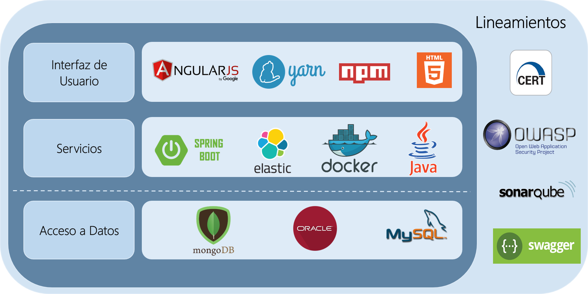
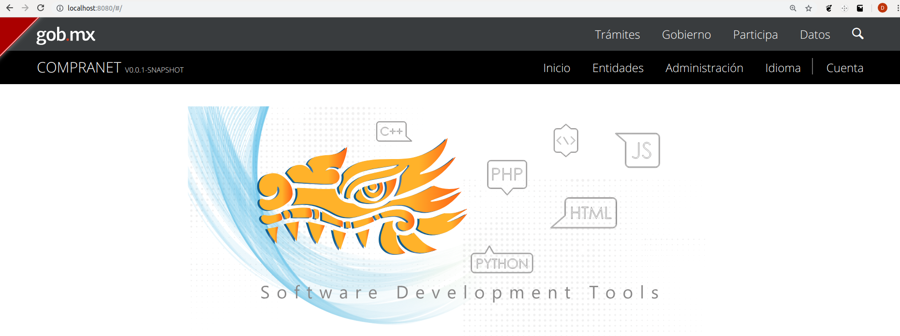
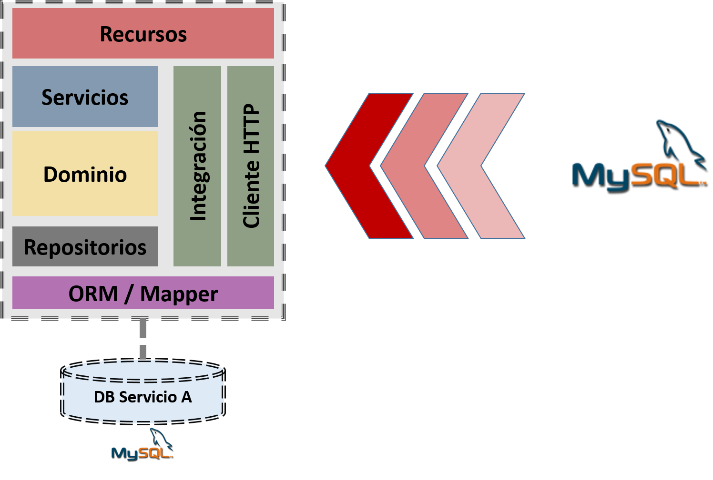

Arquitectura Optimizada







create-project --app-name ateb --database-type SQL_MYSQL --packaging mx.ateb.sales
config ---type FRONT_END
run
El resultado se muestra a continuación:


add-entities-from-database --source SQL_MYSQL
[Se proporcionan las credenciales para la conexión a la base de datos]
// Nombre del archivo: model.3k
// Se crea la entidad persona con 'usuarios' como nombre de la tabla en la base de datos
entity Persona (usuarios) {
-> nombre : String required min(3) max(50),
edad : Integer min(5) max(120) required,
sueldo : Long,
impuesto : Float,
activo : Boolean,
fechaCreacion : LocalDate,
foto : ImageBlob,
ManyToOne manager : Persona,
ManyToMany proyectos : Proyecto,
OneToMany retardos : Retardo,
OneToOne user: CoreUser
}
entity Proyecto {
nombre : String required,
descripcion : String
}
entity Retardo {
descripcion : String,
fecha : LocalDate
}
views {
Proyecto as Sheet
}
add-entities-from-language --file-name model.3k
Ejecutando la aplicación web:
run
Use el siguiente comando para matar el proceso:
stop-process --id [ID_DEL_PROCESO]
Utilizar sonar con docker
docker-start --container-id [id_docker_sonar]
Ejecutar el análisis de código
sonar
Ver los resultados
http://localhost:9000
add-chatbot --url-web-socket wss://chatbot-archetype.herokuapp.com
config ---type FRONT_END
run